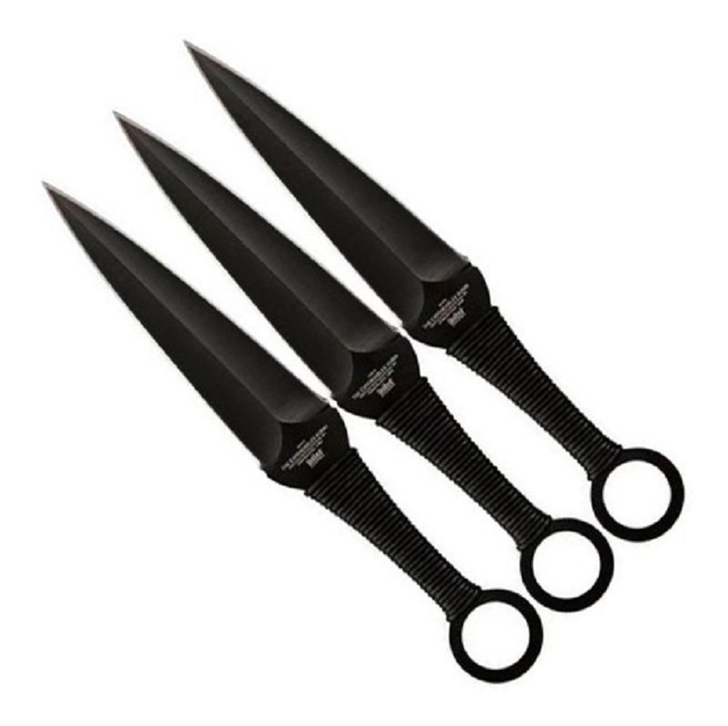
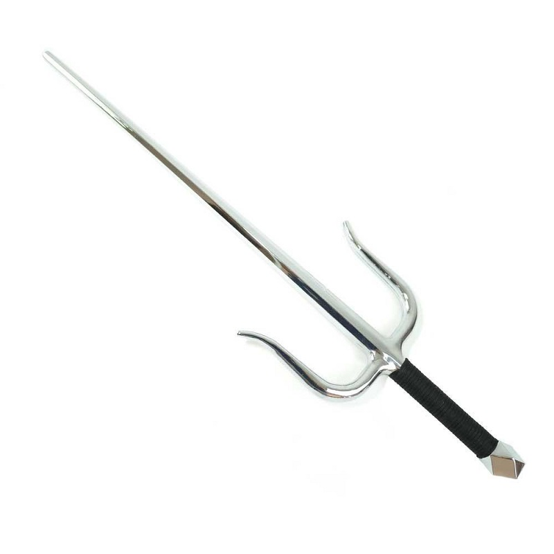
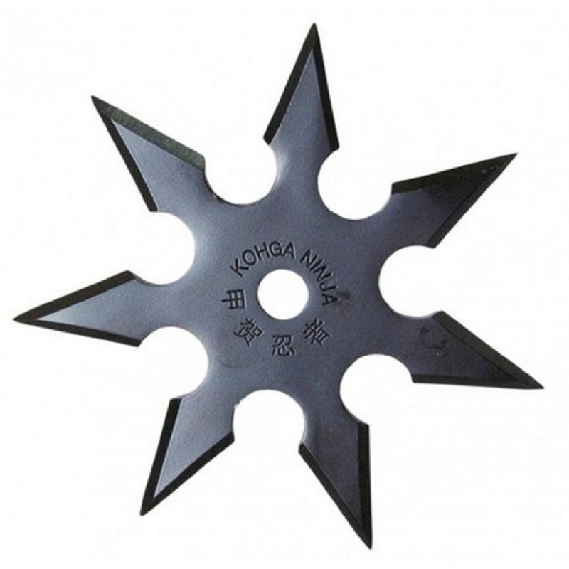

Armas Brancas Chinesas

Bastão de três seções de madeira ou metal conectados por anéis de metal, correntes ou corda.

Is a kind of sword that is used mostly in contemporary Chinese wushu exercises and forms.

Anormalmente larga, com um gancho atrás adornado com crina de cavalo avermelhada.

Lâmina afiada em formato de diamante, mais espessa no centro, afinando até os gumes da espada.
Armas Brancas Romanas

Punhal para combates mais próximos, provavelmente era usado para propósitos mais ornamentados.

Lâmina de gumes retos, geralmente de seção lenticular ou em diamante, mais comprida do que o gládio.

Quando Espadas não alcançavam o inimigo usavam o pilum, que era uma longa lança ou dardo.

Espada ou foice referida em fontes da Grécia e Roma Antigas, quase sempre no contexto mitológico.
Armas Brancas Japonesas

Lâmina de ferro com um grande furo na base (ou pode não ter furo), destinado a amarrar cordas.

Um bastão de um comprimento que normalmente varia entre os 180 cm e os 210 cm.

Uma espécie de punhal asiático com três ramos que permite picar, mas não cortar.

Armas ocultas normalmente arremessadas, mas também podiam servir para cortar ou espetar.